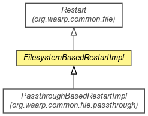

org.waarp.common.file.filesystembased
Class FilesystemBasedRestartImpl
java.lang.Object
 org.waarp.common.file.Restart
org.waarp.common.file.filesystembased.FilesystemBasedRestartImpl
org.waarp.common.file.Restart
org.waarp.common.file.filesystembased.FilesystemBasedRestartImpl
- Direct Known Subclasses:
- PassthroughBasedRestartImpl
public abstract class FilesystemBasedRestartImpl
- extends Restart

Restart implementation for Filesystem Based
- Author:
- Frederic Bregier
|
Field Summary |
protected int |
limit
|
protected long |
position
Valid Position for the next current file |
| Methods inherited from class java.lang.Object |
clone, equals, finalize, getClass, hashCode, notify, notifyAll, toString, wait, wait, wait |
position
protected long position
- Valid Position for the next current file
limit
protected int limit
FilesystemBasedRestartImpl
public FilesystemBasedRestartImpl(SessionInterface session)
- Parameters:
session -
getPosition
public long getPosition()
throws NoRestartException
- Specified by:
getPosition in class Restart
- Returns:
- the position from a previous REST command
- Throws:
NoRestartException - if no REST command was issued before
getMaxSize
public int getMaxSize(int nextBlock)
- Specified by:
getMaxSize in class Restart
- Returns:
- the max between the available size and the nextblock size
setSet
public void setSet(boolean isSet)
- Overrides:
setSet in class Restart
- Parameters:
isSet - the isSet to set
Copyright © 2009-2013 Waarp. All Rights Reserved.